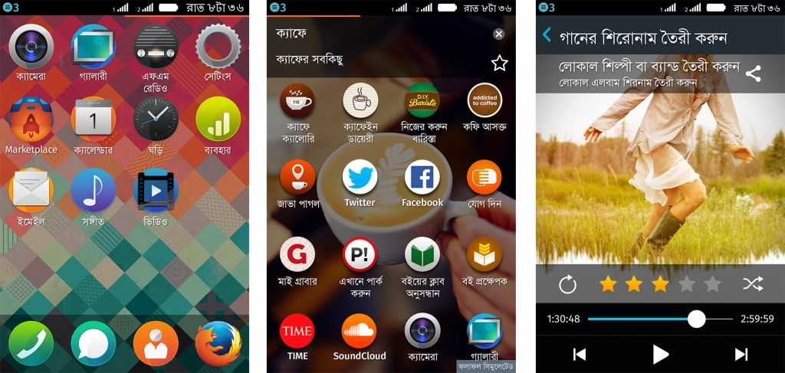

挪威電信商 Telenor Group 將 Firefox OS 智慧型手機引進 孟加拉
暨印度發表首款 Firefox OS 裝置後的數週內，Mozilla 很高興宣佈孟加拉 (Bangladesh) 市場也開始販售 Firefox OS 智慧型手機，在亞洲有更多消費者能享受 Web 的便利。Telenor Group 透過當地電信營運商 Grameenphone，在孟加拉首都達卡 (Dhaka) 舉辦記者會，正式宣佈於本週開始發售由 Symphony 製造的「GoFox F15」裝置。

孟加拉版本的 Firefox OS 截圖，由左至右分別為主畫面、適應性 App 搜尋 (Adaptive App Search) 功能、音樂播放器
Telenor Digital 資深副總裁 Rolv-Erik Spilling 說：「此次盛會代表 Grameenphone、Telenor、Mozilla、Symphony 正式攜手合作。我們極重視能為孟加拉市場帶來簡單易用、價格親民，且具備當地特色的行動網路經驗；並透過 Firefox 手機一次滿足此諸多條件。」
Telenor 是率先加入 Firefox OS 開發活動的合作營運商之一。繼 2013 年於匈牙利 (Hungary)、塞爾維亞 (Serbia)、蒙特內哥羅 (Montenegro) 之後，現在又進一步擴展 Firefox OS 版圖至亞洲地區。
Mozilla 首席技術長 Andreas Gal 表示：「我們很高興能與孟加拉最大的營運商 Grameenphone 合作，讓 Firefox OS 手機能觸及更多亞洲使用者。而 Telenor 公司的『所有人的網路 (Internet for all)』策略，正與 Mozilla 當初所賦予 Firefox OS 的使命不謀而合 ─ 促進線上的開放、創新、機會。」
GoFox F15 搭載最新版的 Firefox OS，除了強化相機功能之外，亦內建豐富的功能：如 Facebook 與 Twitter 的社交功能、Firefox 瀏覽器、FM 收音機、Firefox Marketplace，以及多款高人氣的 App。而 Grameenphone 也特別為孟加拉提供專屬的「WowBox」。其功能是由 Telenor 所設計，讓消費者選擇是否查看手機上的廣告資訊，進而能取得網路上的免費資料。有需要的消費者只要在主畫面向右滑動兩次，即可輕鬆啟用廣告內的商品。
而截至目前為止，已有 23 個市場的本地合作廠商發表 Firefox OS 裝置，地域橫跨亞洲、歐洲、拉丁美洲。
原文連結：Expanding Reach in Asia: Telenor Group Brings Firefox OS Smartphones to Bangladesh